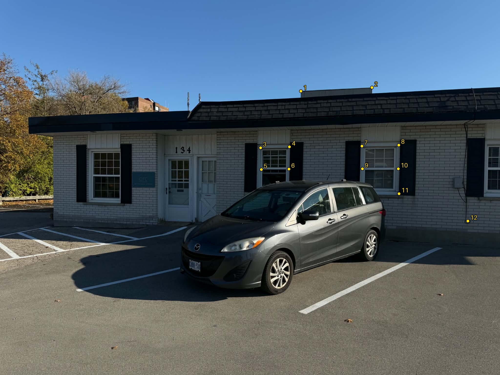
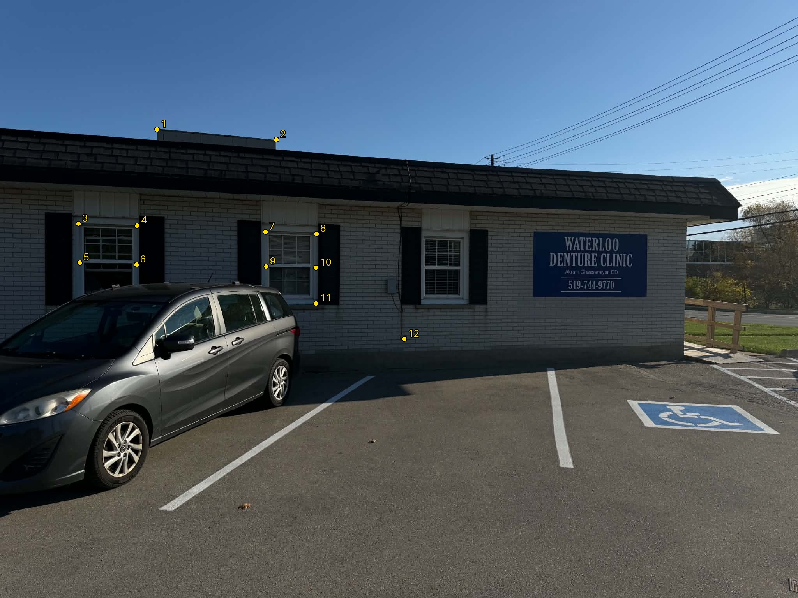
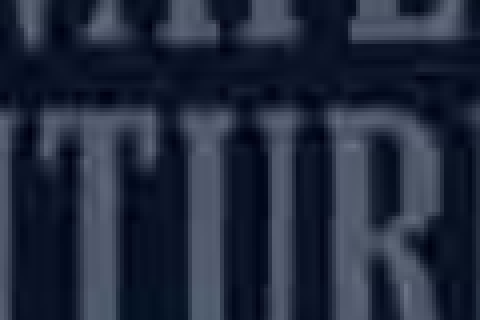

Part A: Image Warping and Mosaicing
A.1: Shoot the Pictures
Set 1: Dental Clinic
Two photos of a dental clinic and its parking lot.


Set 2: Houses
Three photos of neighboring houses with Halloween decorations.


A.2: Recover Homographies
Twelve corresponding points were manually selected in the clinic images. Matching numbers mark the same landmark in both views. Coordinates use the original 2048×1536 images, with (0, 0) at the top-left and x increasing to the right.




Solving for H
For a correspondence (x, y) → (u, v), the projective relation gives two linear equations. Fixing h33 = 1 leaves eight unknowns:
computeH(im1_pts, im2_pts) stacks all 12 pairs into a 24×8 system and solves it with np.linalg.lstsq. Before solving, each point set is centered and scaled to a mean distance of √2 from the origin. The resulting matrix is converted back to pixel coordinates and scaled so h33 = 1.
Recovered Homography
This matrix maps Image 1 to Image 2, using \((u, v, 1)^T \sim H(x, y, 1)^T\).
The reprojection RMSE over the selected points is pixels in Image 2.
A.3: Warp the Images
For each output pixel, apply H−1 and divide by the homogeneous coordinate to find its position in the source image. The default canvas is computed from the four transformed image corners. A separate validity mask records which pixels sample the source image.
- Nearest neighbor: Round the source coordinates and copy that pixel.
- Bilinear: Take the four surrounding pixels and weight them by their horizontal and vertical distances.
With fractional offsets a and b from the upper-left neighbor, bilinear interpolation computes:
(1-a)(1-b) I[y0, x0] + a(1-b) I[y0, x1]
+ (1-a)b I[y1, x0] + ab I[y1, x1]Rectification 1: Clinic Sign
The four marked corners are mapped to a 600×340 rectangle.


Rectification 2: House Window
The window frame is mapped to a 600×400 rectangle.


Interpolation Comparison

Nearest neighbor produces blocky steps around the letters and window frame. Bilinear interpolation smooths those transitions, giving softer edges. Nearest neighbor is faster because each output pixel uses one sample; bilinear combines four.
Median runtime over runs after a warm-up, including inverse mapping and interpolation:
| Example | Output Size | Nearest Neighbor (ms) | Bilinear (ms) |
|---|